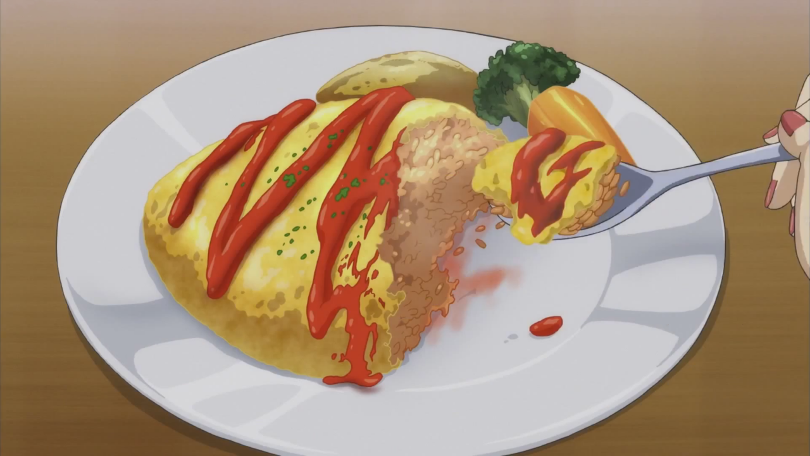

OMURICE

A new way to make an omelette
Ketchup-flavored fried rice bundled up in a thin layer of fluffy omelette, omurice is a classic Japanese home cooked
dish.Omurice (pronounced as o-muraisu in Japanese) is a contemporary Japanese fusion creation that marries both
Western omelette and Japanese fried rice. As you can tell, the word “omurice” comes from Japanese portmanteau for
omelette (omelet) and rice, resulting in the name omelette rice or omelet rice.
Ingredients
For the Ketchup Fried Rice
- ½ onion
- 1 boneless, skinless chicken thigh
- 1 tbsp extra-virgin olive oil
- ½ cup frozen mixed vegetables (defrosted)
- ⅛ tsp kosher salt
- ⅛ tsp freshly ground black pepper
- 2 servings cooked Japanese short-grain rice
- 1 Tbsp ketchup
- 1 tsp soy sauce
For the Omelettes
- 2 large eggs (50 g w/o shell) (divided)
- 2 Tbsp milk (divided)
- 2 Tbsp extra-virgin olive oil (divided)
- 6 Tbsp shredded sharp cheddar cheese (or any other kind)
Steps
To Make The Ketchup Fried Rice
- Mince the onion finely into ⅛-inch (3 mm) pieces.
- Dice the chicken into ½-inch (1.3 cm) pieces.
- Heat the oil in a large frying pan over medium heat and sauté the onions until tender.
- Add the chicken and cook until it's no longer pink.
- Add the mixed vegetables and season with salt and pepper.
- Add the cooled rice and use a cutting motion with your spatula to break the clumps into small pieces.
- Add the ketchup and soy sauce and stir to combine. Transfer the fried rice to a plate and wash the pan.
To Make the Omurice
- We'll make the omurice one at a time. Whisk 1 egg and 1 Tbsp milk in a small bowl.
- Heat 1 Tbsp oil in the pan over medium-high heat. Distribute the oil to make sure the surface of the pan is coated well.
- When the pan is hot, pour in the egg mixture and tilt the pan to coat the entire surface with the egg. Cook the egg until the bottom has set but the top is still soft. Lower the heat to medium low.
- Sprinkle 3 Tbsp cheese on top, then add half of the ketchup fried rice across the middle of the omelette.
- Use the spatula to fold both sides of the omelette over the middle to cover the fried rice. Carefully move the omurice to the edge of the pan.
- Holding a plate in one hand and the pan in the other, flip the pan to transfer the omurice, seam side down, onto the plate.
- While it's still hot, cover the omurice with a paper towel and form it with your hands into an elongated oval shape (similar to an American football or rugby ball). Repeat this process to make the next omurice.